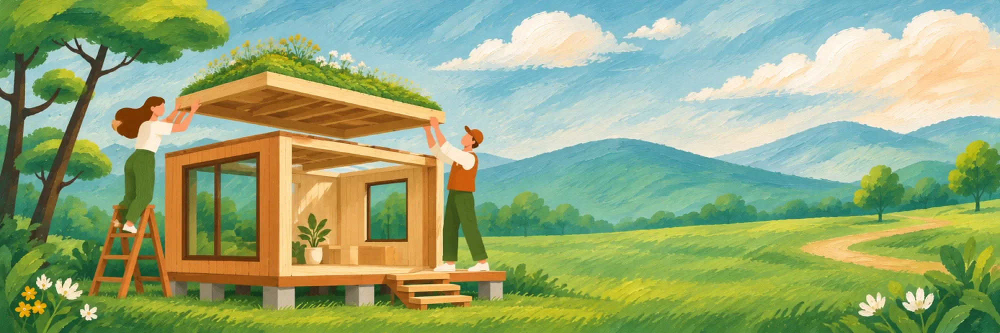
Модульный дом —
точность цеха,собранная за день
Дом или его крупные части делают в цеху — с контролем геометрии, сухих материалов и герметичности, какой на стройплощадке под дождём не добиться, — потом привозят и ставят на готовые опоры за часы. Модули можно наращивать, когда семья растёт, и перевезти, когда она переезжает. Это единственная технология каталога, у которой каждый следующий дом учится у предыдущего: завод, в отличие от разовой бригады, накапливает опыт и повторяет удачные решения. И это метод, а не материал: в цеху можно собрать что угодно — от лёгкого каркаса до соломенных панелей.
← Каталог технологий · Технология возведения 09
Точность цеха, собранная за день
Все предыдущие технологии каталога так или иначе строятся на месте, под открытым небом. Модульный дом делает противоположный ход: он переносит стройку с грязной, мокрой, зависящей от погоды площадки — в цех. Дом или его крупные части собирают в помещении, на заводе, с той точностью геометрии, сухостью материалов и герметичностью, каких на площадке под дождём не добиться. Готовые модули привозят на участок и ставят на подготовленные опоры за часы.
Из этого сдвига вытекает многое, что стройплощадке недоступно в принципе. Модули можно наращивать, когда семья растёт, и увозить, когда она переезжает. А главное — это единственная технология в списке, у которой каждый следующий дом учится у предыдущего: завод, в отличие от разовой бригады, накапливает опыт, отлаживает узлы и повторяет удачное решение из раза в раз. Панель учится у панели.
Ниже — как устроено такое строительство, почему цех даёт то, чего не даёт площадка, откуда пришла идея и в чём её честные ограничения. И почему «префаб» — давно не синоним унылой типовой коробки.
Как это устроено
Важно сразу развести два понятия. Префаб (от prefabricated, «сборный») — это про то, что части дома изготовлены заранее на заводе. Модульный — частный случай префаба, где дом собирают из крупных объёмных блоков-комнат. Внутри этого есть градация: от плоских панелей (стены, перекрытия, кровля привозят листами и собирают на месте) до целых объёмных модулей — готовых комнат с отделкой, проводкой и даже мебелью, которые остаётся только состыковать.
Схема работы одинакова. Пока на участке готовят фундамент или опоры, в цеху параллельно собирают дом — и эти два процесса идут одновременно, а не один за другим, что резко экономит время. Готовые элементы грузят на транспорт, привозят, поднимают краном и стыкуют. Плоскопанельный дом собирают на площадке за дни; объёмно-модульный ставят и подключают буквально за часы.
И ключевое: модульность — это метод, а не материал. В цеху можно собрать что угодно — лёгкий деревянный каркас, панели с соломенным или конопляным утеплителем, стальные или бетонные модули. Поэтому префаб не противостоит другим технологиям каталога, а способен вобрать их: соломенную стену, например, гораздо проще и суше собрать под крышей завода, чем в поле под дождём.
Почему это работает
Главное преимущество цеха — контроль. На стройплощадке многое портит погода: материалы мокнут, размеры «гуляют» от сырости, зимой встают мокрые процессы, а качество зависит от конкретной бригады в конкретный день. В цеху всё это исчезает. Материалы остаются сухими, геометрия выверена по кондукторам, работа идёт круглый год под крышей. Отсюда — точность и сухость, которые дорогого стоят для долговечности дома.
Из этой точности напрямую следует энергоэффективность. Чтобы дом был по-настоящему тёплым, его оболочка должна быть герметична — без щелей, через которые уходит тепло; а идеальную герметичность легче обеспечить на выверенном стенде, чем на ветреной площадке. Не случайно многие дома пассивного стандарта делают именно в заводской сборке: там проще выдержать ту непрерывность утепления и плотность, которых требует пассивный дизайн.
Есть и прямая экологическая выгода. На заводе меньше отходов: раскрой оптимизируют, обрезки идут в дело, а не на свалку, — тогда как обычная стройка выбрасывает заметную долю материалов. И работает эффект, недоступный разовой бригаде: завод учится. Ошибку, найденную в одном доме, исправляют для всех следующих; удачный узел повторяют. Качество не рождается заново на каждой площадке, а накапливается.
Откуда это взялось
Идея прислать дом по частям стара более века. В начале XX века по каталогам — например, знаменитым Sears Roebuck в США — можно было заказать целый дом: тебе привозили пронумерованные детали и инструкцию, а ты собирал жильё, как большой конструктор. Уже тогда завод делал то, что раньше делали на месте.
По-настоящему массовым префаб стал после Второй мировой войны, когда нужно было быстро и дёшево расселить миллионы людей. Индустриальное панельное домостроение решило эту задачу количеством — но заодно наградило само слово «префаб» дурной славой: типовые серые коробки, собранные наспех, стали символом безликости. Эта репутация до сих пор тянется за технологией.
И она давно устарела. Последние десятилетия префаб переживает переосмысление: заводская точность позволила делать не унылые коробки, а качественные, энергоэффективные и архитектурно интересные дома — вплоть до пассивных и «премиальных». Цех оказался не врагом хорошей архитектуры, а её инструментом: он даёт то, чего площадка дать не может, — повторяемое качество.
Плюсы и ограничения
Достоинства модульного строительства почти все про надёжность и время. Заводская точность и сухость дают меньше брака и лучшую долговечность; герметичность легко довести до пассивного уровня. Стройка на участке занимает дни, а не месяцы, потому что фундамент и дом делают параллельно. Отходов меньше, а качество накапливается от дома к дому. И редкая для стройки гибкость во времени: модульный дом можно нарастить, когда семья растёт, разделить или даже перевезти на новое место.
Но у переноса стройки в цех есть неизбежная плата. Первое и главное — транспорт и габариты: готовый модуль надо довезти по дорогам, а значит, его размеры ограничены шириной полос, высотой мостов и грузоподъёмностью крана; перевозка тяжёлых объёмных блоков и сама стоит денег, и добавляет углеродный след, особенно если завод далеко. Второе — меньшая свобода на месте: дом надо спроектировать и во многом «заморозить» до начала производства, менять что-то по ходу, как на обычной стройке, уже нельзя, а планировка отчасти подчинена габаритам модуля.
Есть и системные нюансы. Заводское производство выгодно на потоке — единичный, штучный дом в цеху может выйти дороже, чем построенный на месте; экономику делает серия. И стыки между модулями — потенциально слабые места, за качеством которых нужно следить особо. Ни одно из этих ограничений не отменяет метод, но очерчивает, где он силён: там, где ценят скорость, предсказуемость и повторяемое качество.
Как это выглядит вживую
Модули и морские контейнеры: от одного блока до двухэтажных домов, собранных как конструктор.
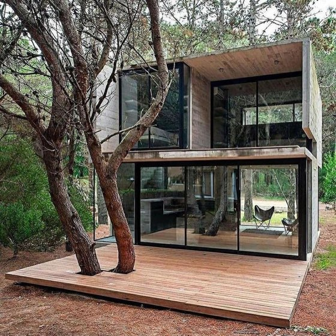
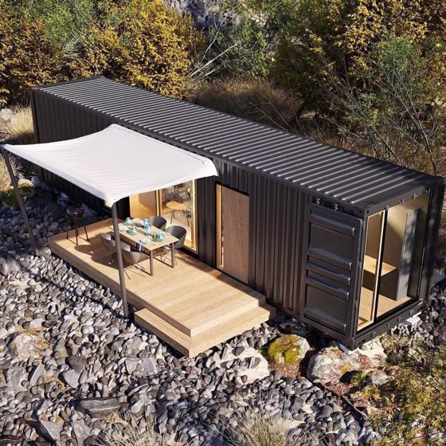
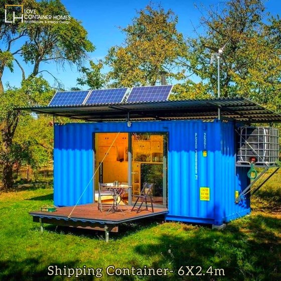
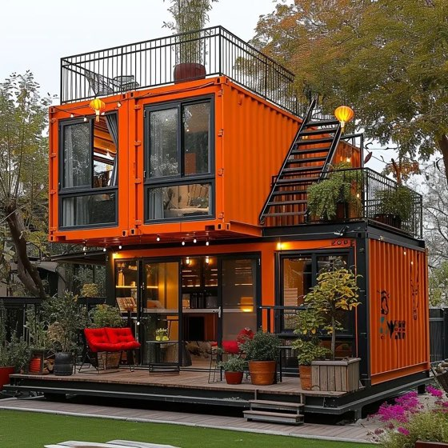
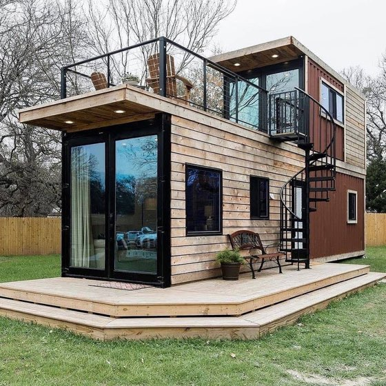
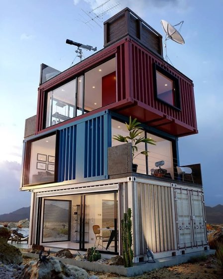
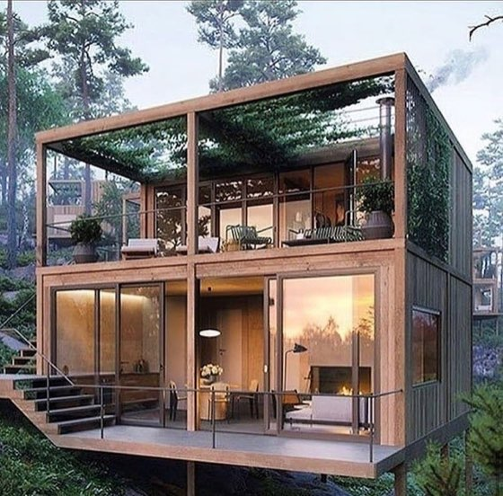
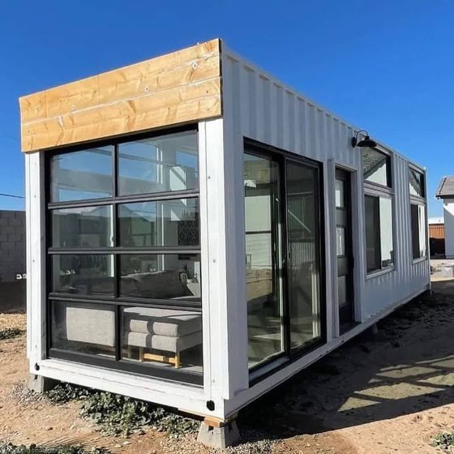
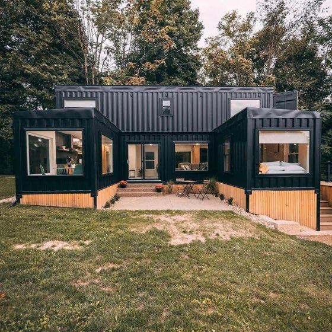
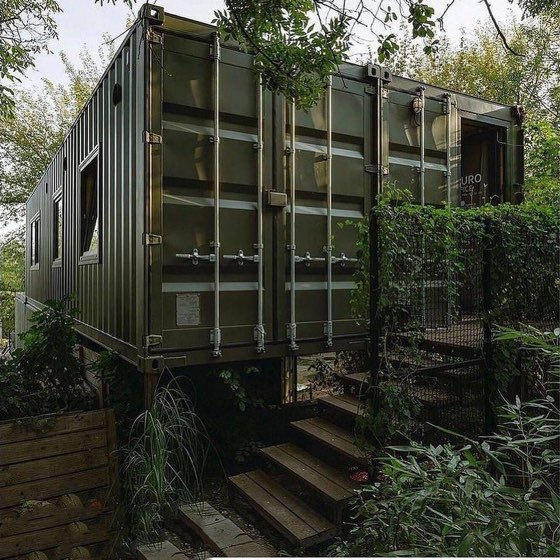
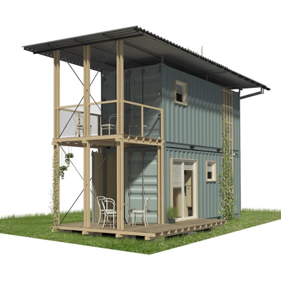
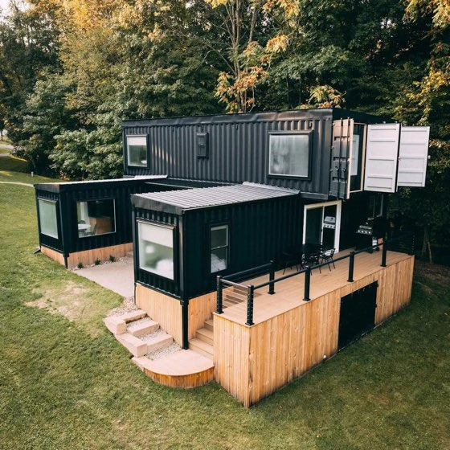
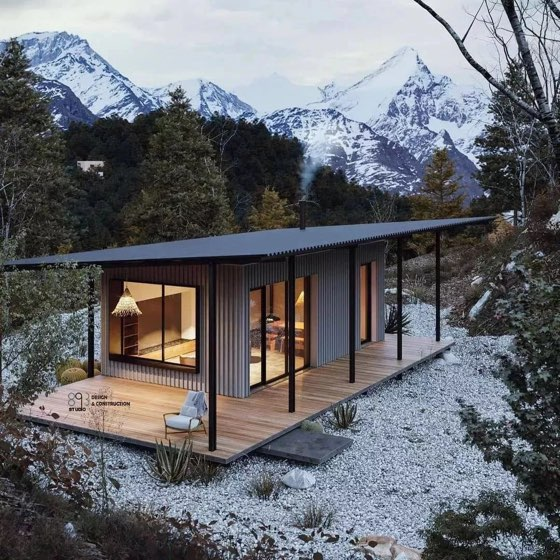
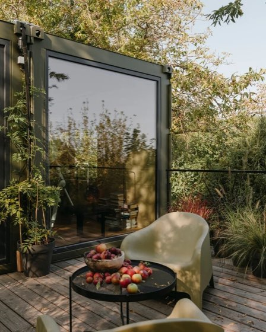
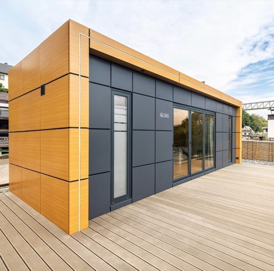
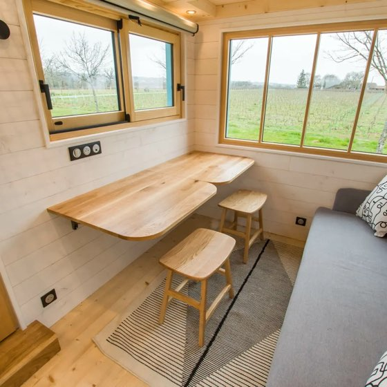
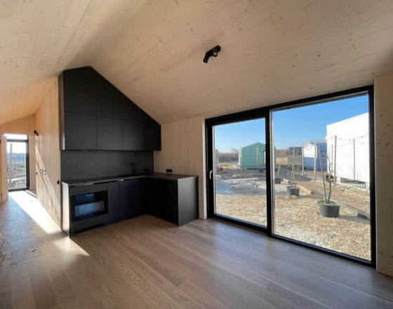
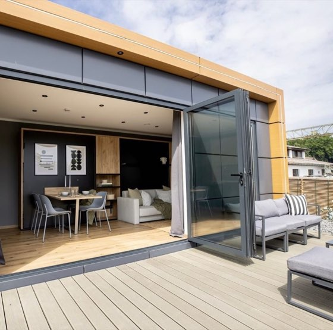
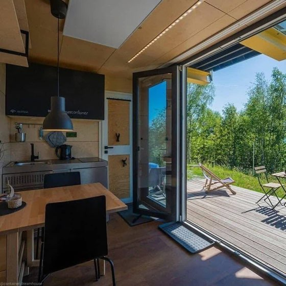
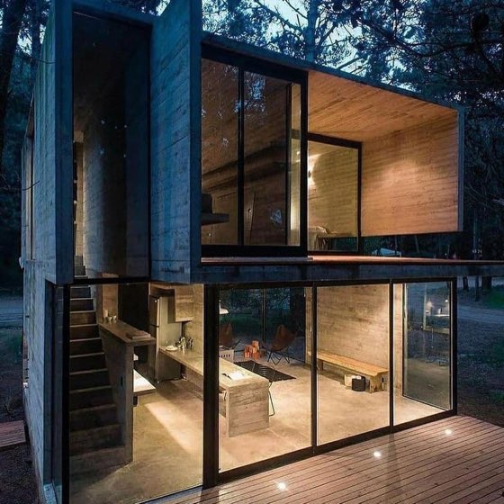
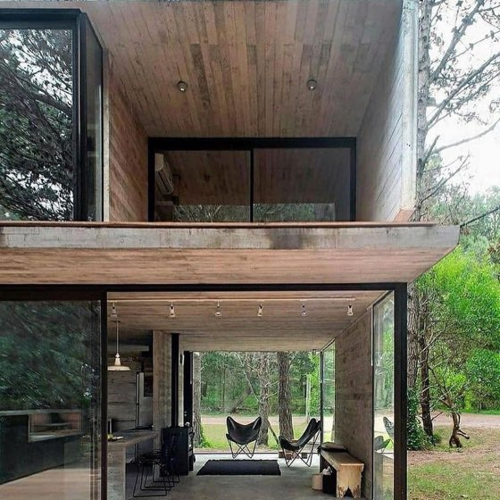
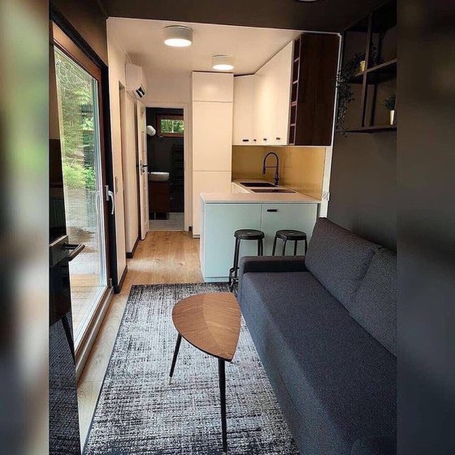
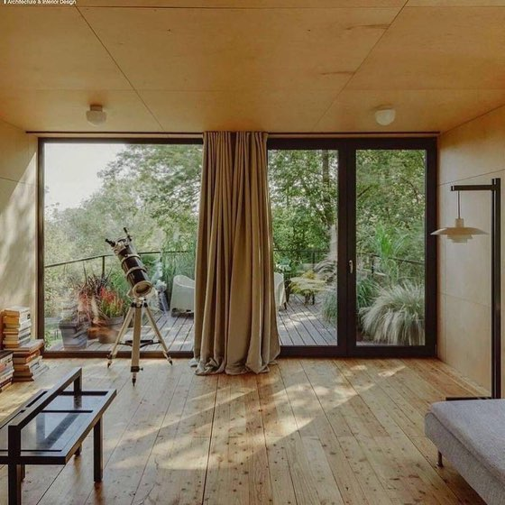
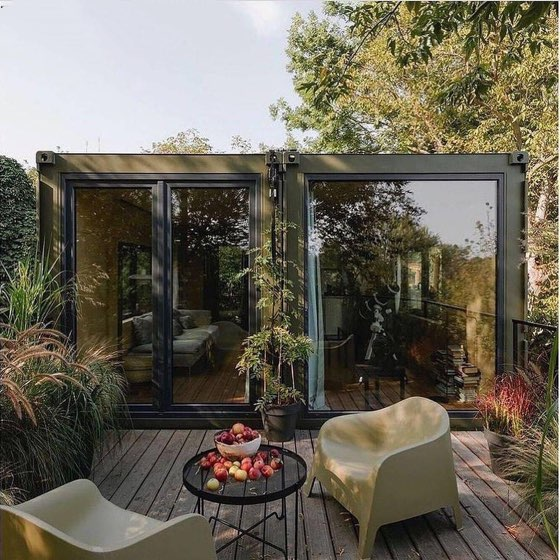
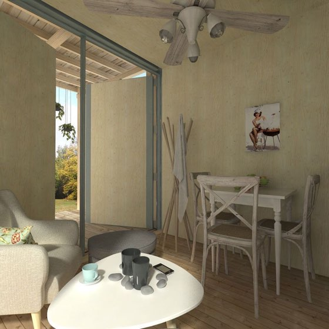
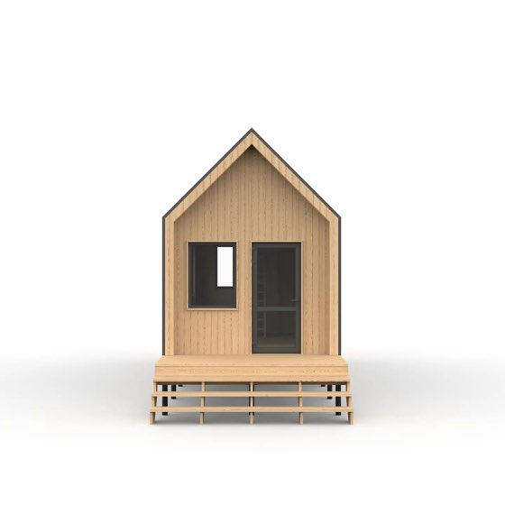
Фотографии принадлежат авторам, указанным под снимками; подпись ведёт на исходную публикацию в Instagram.
Итог: дом, который учится
Модульное строительство стоит в каталоге особняком, потому что это ответ не на вопрос «из чего», а на вопрос «где и как» строить. Перенеся сборку с площадки в цех, оно меняет саму природу стройки: вместо разовой, зависящей от погоды и бригады работы получается повторяемый, контролируемый, обучающийся процесс. И в этот процесс можно вложить любую из прочих технологий — от соломы до пассивного стандарта, — собрав их точнее и суше, чем позволяет поле.
У метода есть своя плата — дороги, габариты, замороженный на старте проект, — и потому он не универсален. Но там, где важны скорость, предсказуемость и качество, которое не нужно каждый раз изобретать заново, префаб даёт редкое: дом, собранный с точностью изделия, а не постройки. И, в отличие от всего остального в каталоге, — дом, который умеет учиться на своих предшественниках.
Читайте такжеСтройка без горы мусора: как сократить строительные отходы — почему заводская сборка — один из главных способов сократить строительный мусор.